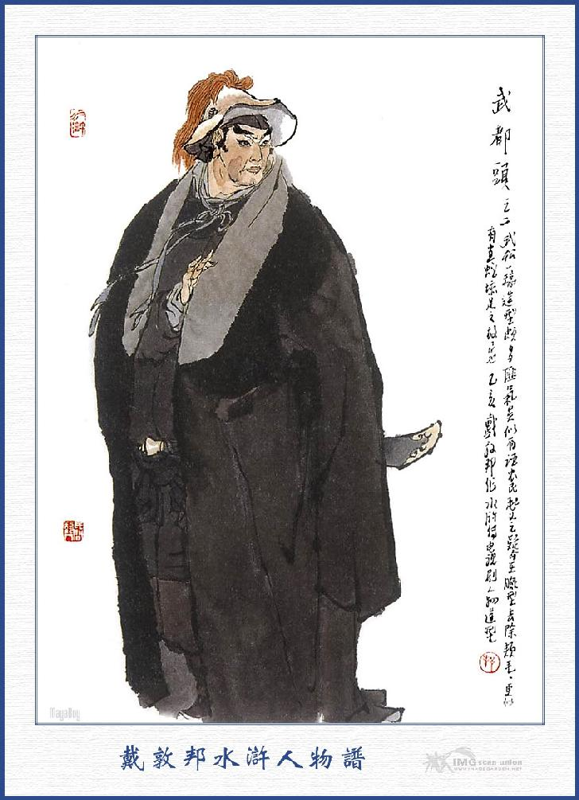
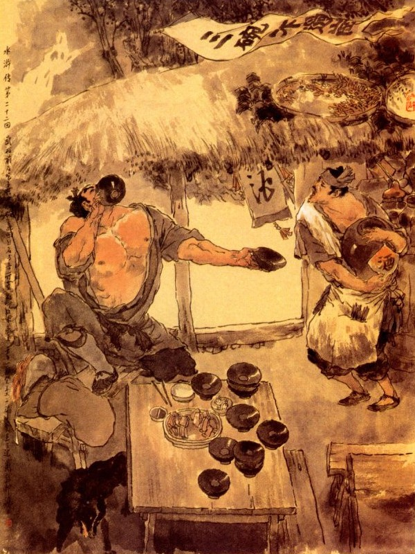
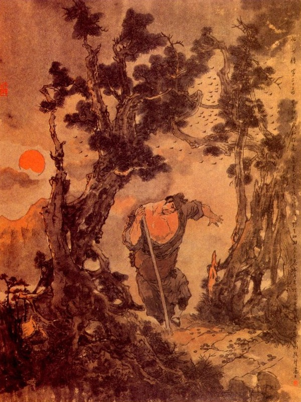

Bấy giờ Tống Giang thấy đại hán kia quỳ xuống đất, liền giơ tay đỡ dậy mà hỏi rằng:
- Chẳng hay quý tánh cao danh túc hạ là gì, xin cho tôi được biết?
Sài Tiến trỏ vào đại hán ấy mà bảo với Tống Giang rằng.
- Bác này người ở huyện Thanh Hà, họ Võ tên Tòng, ở vai thứ hai, đến chơi đây đã một năm nay đó.
Tống Giang cả mừng mà rằng:
- Xưa nay vẫn thường nghe tiếng Võ Nhị Lang mà ai ngờ lại vơ vẩn gặp đây, cái cơ hội ấy rất là hiếm có, vậy xin đón lên nhà để nói chuyện một thể.
Tống Giang lấy làm vui mừng liền dắt tay Võ Tòng cùng đi lên trên nhà rồi bảo anh em là Tống Thanh ra chào. Sài Tiến mời Võ Tòng vào ngồi dự tiệc. Tống Giang có ý mời Võ Tòng cùng ngồi ngang hàng, song Võ Tòng nhất định không nghe mà ngồi vào ghế thứ ba. Sài Tiến sai người nhà dọn lại bàn tiệc rồi hết sức khuyên mời ba người sơi rượu. Bấy giờ dưới bóng đèn sáng Tống Giang nom rõ mặt Võ Tòng là một người hiên ngang khác chúng thì trong lòng càng vui vẻ bội phần. Nhân lại hỏi Võ Tòng rằng:
- Nhị Lang làm sao cũng quanh quẩn đến đây?
Võ Tòng đáp rằng:
- Nguyên tiểu đệ khi ở Thanh Hà có cãi nhau với một anh làm việc quan rồi nóng người tiết lên đánh anh ta một đấm nằm vật ra đấy, tiểu đệ chắc rằng thế nào anh ta cũng chết mà liên lụy đến thân nên phải chạy sang Sài Đại quan nhân đây để mà lánh mặt, tới nay đã hơn một năm rồi. Sau tiểu đệ hỏi thăm thấy nói là anh ta không việc gì cả, liền muốn trở về qua làng rồi đi sang tìm đến Ca Ca dè đâu lại bị sốt rét ngồi sưởi thì gặp Ca Ca dẫm phải cái xẻng lửa làm cho tiểu đệ giật mình toát cả mồ hôi, có lẽ lại khỏi cả bệnh sốt.
Tống Giang nghe nói cả mừng cùng ngồi uống rượu với nhau đến canh ba mới tan. Đoạn rồi Tống Giang dắt Võ Tòng xuống tây hiên để cùng ngủ.
Sáng hôm sau Sài Tiến sai giết dê mổ lợn để khoản đãi Tống Giang mà lưu giữ ở đây. Cách mấy hôm sau Tống Giang lấy tiền nhờ người may quần áo cho Võ Tòng mặc. Sài Tiến thấy vậy liền lấy ra một hòm vải đoạn sai thợ ở trong nhà may áo, may xiêm cho tất cả ba người mà không dám để cho thiệt hại đến tiền của Tống Giang.
Nguyên Võ Tòng từ khi mới đến ở đấy, Sài Tiến cũng khoản đãi tử tế không có chút gì trễ nải. Duy tính khí Võ Tòng là người cương trực mỗi khi đánh chén say vào thì lại hay sinh sự với người nhà, người cửa, lỡ ra anh nào có điều gì sơ suất, thượng cẳng tay hạ cẳng chân liền, đánh đá luôn ngày mà không nể anh nào cả. Bởi thế bọn người nhà là không ai bằng lòng với Võ Tòng cả mà thường khi lại đem chuyện lên để nói cho Sài Tiến biết. Sài Tiến thấy vậy thì cũng không có lòng nào khinh bỉ đuổi đi, song từ đó cách tiếp đãi cũng dần dần không được chu tất như là khi trước nữa. Ngày nay may được có Tống Giang đến đây, hàng ngày lại bạn bè tiếp đãi với Võ Tòng làm cho Võ Tòng cũng hả vui trong dạ mà khỏi cả bệnh xưa. Ở đó được mười lăm hôm thì Võ Tòng có ý muốn trở về làng để thăm anh cả, song Sài Tiến cùng Tống Giang cố giữ lại mà không cho đi. Võ Tòng nói với hai người rằng:
- Tôi còn có anh cả ở nhà mà lâu nay không thấy có tin tức gì đến đây, vậy thế nào cũng xin về qua mới được.
Tống Giang nói:
- Nếu quả là Nhị Lang, có lòng muốn về thì cũng không nên cưỡng là lưu lại, xong có lúc nào rảnh rỗi thì lại xin mời đến đây để xem cơ hội ra sao?
Võ Tòng vâng lời mà cảm tạ Tống Giang, Sài Tiến lại lấy một ít tiền bạc đưa tiễn Võ Tòng.
Võ Tòng tạ ơn mà rằng:
- Chúng tôi ở đây đã lâu thực là phiền nhiễu Đại quan nhân lắm lắm.
Nói đoạn thu xếp khăn gói hành lý để sắp sửa ra đi. Sài Tiến lại đặt tiệc tiễn hành, mấy người chè chén trò chuyện với nhau đến khi quá vui rồi Võ Tòng mới xin bái biệt để đi. Bấy giờ Võ Tòng mình mặc áo trừu đỏ mới, đầu đội nón chiên trắng, lưng đeo khăn gói; tay xách gậy mà từ biệt mọi người để lên đường. Trong khi sắp sửa ra đi, Tống Giang còn cầm lại rồi chạy về phòng lấy mấy lạng bạc giắt vào lưng mà bảo với Võ Tòng rằng:
- Tôi xin đưa chân hiền đệ đi một quãng cho vui.
Nói đoạn Võ Tòng từ biệt Sài Tiến, ra đi, hai anh em Tống Giang cũng xin phép để đi tiễn chân một thể. Ba người ra khỏi Đông Trang được độ dăm bảy dặm đường, Võ Tòng liền quay lại vái Tống Giang mà rằng:
- Tới đây đã xa rồi xin Huynh trưởng trở về kẻo Sài Đại quan nhân mong đợi.
Tống Giang đáp rằng:
- Để tôi đưa chân hiền đệ một quãng nữa có hại gì.
Nói đoạn ba người lại cùng đi cùng nói chuyện với nhau. Vào khoảng hai ba dặm đường nữa, Võ Tòng lại cầm tay Tống Giang mà rằng:
- Tôi xin đưa chân đến chỗ tửu điếm ở bên đường cái kia, để ta cùng uống với nhau mấy chén rượu nữa rồi ta sẽ trở về.
Đoạn rồi ba người, cùng dấn bước đến chỗ tửu điếm bên đường. Khi tới nơi, Tống Giang ngồi đầu bàn dưới, còn Tống Thanh thì ngồi một bên rồi tửu bảo dọn rượu lên ba người cùng uống. Bấy giờ mặt trời đã xế non Tây, Võ Tòng liền nói với Tống Giang rằng:
- Ca Ca đã có lòng hạ cố mà không bỏ Nhị Lang này thì xin Ca Ca nhận cho bốn lạy để bái nghĩa làm huynh. Tống Giang rất lấy làm vui mừng liền nhận bốn lạy của Võ Tòng rồi lấy ra một đĩnh mười lạng bạc đưa tiễn Võ Tòng.
Võ Tòng từ chối không lấy mà rằng:
- Cái đó xin để Ca Ca chi dụng.
Tống Giang nói: - Hiền đệ bất tất phải từ chối, nếu hiền đệ không lấy thì ta không dám nhận làm anh em.
Võ Tòng bất đắc dĩ phải nhận lấy mà bọc vào khăn gói tử tế, Tống Giang lại lấy ít tiền lẻ ra để tính trả tiền rượu, đoạn rồi Võ Tòng cầm lấy gậy mà cùng nhau đứng dậy đi ra ngoài tửu điếm. Khi ra tới cửa Võ Tòng lại gạt lệ bái biệt mà đi. Còn hai người anh em Tống Giang thì đứng trước cửa hàng trông theo mãi đến khi người xa xa khuất mới cùng nhau lui gót trở về.
Trông chừng trời đổ non tây
Anh hùng này lúc chia tay cũng sầu!
Rồi đây một bước xa nhau
Kinh trời động đất biết đâu có người
Bây giờ Tống Giang cùng Tống Thanh trở về đến nửa đường thì gặp Sài Tiến cưỡi ngựa và sau lưng dắt hai con ngựa đi không để ra đón, Tống Giang trông thấy cả mừng liền cùng nhau lên ngựa dóng cương cùng về trang viện. Đoạn rồi Sài Tiến lưu hai anh em Tống Giang cùng ở đó mà cung phụng rất là tử tế.

VÕ TÒNG
Võ Tòng từ khi bái biệt Tống Giang đi được mấy thôi đường thì trời đã tối, liền tìm vào một tửu điếm để nghỉ. Sáng hôm sau cơm nước xong rồi lại một mình ra đi thực sớm. Chàng vừa đi vừa nghĩ thầm trong bụng rằng: "Xưa nay chỉ nghe tiếng bọn giang hồ nói là Cập Thời Vũ Tống Công Minh mà không được gặp. Ngày nay mới biết là quả nhiên danh bất hư truyền, kết giao được một người như thế, để làm anh em, thực cũng khỏi phí một đời hảo hán". Võ Tòng nghĩ như vậy thì trong lòng cũng lấy làm vui vẻ và hâm mộ vô cùng. Cách vài hôm sau, một hôm vào khoảng quá trưa, chàng đi tới gần địa hạt huyện Dương Cốc, nghe trong bụng cũng có đôi phần đói khát, muốn tìm vào tửu điếm để ăn. Chợt trông thấy trước mặt có một ngôi hàng rượu, trước cửa cắm lá cờ chiêu bài, viết mấy chữ rằng: "Ba chén không qua được núi". Chàng ta thấy vậy liền xăm xăm đi vào hàng, kiếm ghế ngồi và dựa gậy vào một chỗ rồi gọi nhà hàng lấy rượu. Bấy giờ thấy chủ hàng mang ra ba cái chén, một đôi đũa và một đĩa rau chín, đặt lên trên bàn rồi bảo với chủ hàng rằng:
- Cái rượu này tốt, uống vào dễ chịu lắm, chủ nhân có thức gì nhắm đem lại đây.
Chủ hàng đáp:
- Hàng tôi chỉ có thịt bò chín thôi.
- Được, thái vài ba cân thịt, đem đây nhắm rượu.
Chủ hàng vâng lời ra thái hai cân thịt, để vào một cái đĩa lớn đem lên rồi lại rót ra thêm một chén rượu nữa là ba. Khi uống xong chủ hàng cất rượu đi mà không rót nữa. Võ Tòng liền vỗ bàn mà kêu lên rằng:
- Nhà hàng sao không rót rượu nữa ra đây?
Nhà hàng đáp:
- Ngài xơi thịt nữa thì tôi đem lên thôi.
- Ta uống rượu nữa và thái thịt lên đây một thể.
- Ngài cần thịt thì tôi xin thái thêm, chứ rượu thì tôi không bán nữa.
- Quái lạ? Sao không bán rượu cho ta nữa?
- Ngài có trông thấy trên cửa tôi yết rằng: "Ba chén không qua được núi" chăng?
- Rượu của tôi đây đâu phải là rượu của quê nhà, nhưng cũng không kém gì các thứ rượu tăm, phàm ai đến hàng này uống vào ba chén là say ngay không thể nào qua được núi. Bởi vậy nên bao nhiêu người tới đây cũng chỉ uống ba chén mà không ai gọi lấy thêm bao giờ.
Võ Tòng cười mà rằng:
- Thế sao ta uống hết ba chén cũng không thấy say?
- Thứ rượu của tôi đó, gọi là rượu Thấu bình hương là thơm thấu ra ngoài bình, lại gọi là rượu Xuất môn tảo, nghĩa là mới uống vào thì ngọt như rượu nếp rồi một lúc ngã say người ra.
- Thôi đừng nói khoác, không rót ba chén nữa đây thì không trả tiền nữa.
Chủ hàng thấy Võ Tòng quả nhiên chưa có gì là say, liền lấy rượu rót thêm ba chén cho Võ Tòng uống. Võ Tòng uống lại khen rằng:
- Rượu tốt thực! Chủ hàng ôi! Ta uống chén nào trả tiền chén ấy, cứ rót đây cho ta.
- Chết rồi, ngài chớ uống liều thế, rượu này say chết người, không ai mà chữa được đâu?
- Thôi anh đừng nói láo, anh có bỏ thuốc mê vào đó thì ta đây cũng có mũi chứ.
Chủ hàng không biết làm thế nào được, lại phải rót ra ba chén nữa, Võ Tòng lại gọi lấy thêm hai cân thịt nữa lên rồi uống luôn mấy chén rượu, ra dáng khoái hoạt vô cùng.
Khi uống hết mấy chén rồi, Võ Tòng bỏ ra ít tiền lẻ để bàn rồi gọi chủ hàng đến mà bảo rằng:
- Anh thử xem tiền tôi có đủ trả tiền rượu không.
Chú hàng đếm thấy nhiều tiền liền đáp rằng:
- Đây còn thừa của ngài, để trả lại ngài.
- Không cần trả lại, cứ rót rượu ra đây là được rồi.
- Ngài muốn uống nữa, đây cũng còn đến dăm sáu chén, nhưng chỉ sợ ngài không uống được thôi.
- Có dăm sáu chén thì cứ mang tất cả ra đây.

Chủ hàng nghe nói liền đáp rằng:
- Ông to lớn thế này mà ngã lăn ra thì ai nâng dậy được?
Võ Tòng cười mà rằng:
- Ta lại cần đến anh nâng đỡ dậy thì đã không phải là tay hảo hán.
Chủ hàng nghe nói mặc lòng, nhất định không đem rượu ra bán nữa. Võ Tòng nổi giận lên mắng rằng:
- Ta không thèm uống quịt của các ngươi, các ngươi đừng trêu tức lão gia mà lại tan cả nhà bây giờ!
Chủ hàng nghĩ thầm trong bụng: "Anh này đã chếng choáng rồi, mặc thây hắn ta, chẳng dây vào làm gì nữa!” Nghĩ đoạn liền đem rượu ra rót luôn năm sáu chén cho Võ Tòng uống. Võ Tòng uống xong, tính tất cả trước sau có tới mười tám chén rượu liền vớ lấy gậy đứng phắt dậy mà nói rằng:
- Nào ta có say gì đâu?
Nói đoạn đi ra đến cửa lại cười ha hả lên rằng:
- Nào ta có say gì đâu? Thế mà chả nói rằng ba chén không qua được núi!
Đoạn rồi vác gậy chạy xông đi. Bấy giờ chủ hàng chạy ra gọi lên mà bảo rằng:
- Này ông khách đi đâu đấy?
Võ Tòng nghe nói đứng dừng lại mà rằng:
- Gọi ta làm cái gì? Ta có thiếu tiền của anh đâu mà gọi?
- Tôi gọi vì có lòng tử tế đó thôi, ông hãy vào nhà tôi mà xem giấy của quan yết thị đã.
- Yết thị gì?
- Hiện nay ở trên núi Cảnh Dương có một con cọp rất lớn, cứ đến chiều là ra đón ở đường, để hại người qua lại, xưa nay giết hại đã có tới hai ba mươi tên hảo hán mà chưa ai làm sao trị nổi. Bởi vậy quan trên đã nghiêm sức cho bọn săn bắn đi lùng bắt và yết giấy cho các hành khách, tất phải đợi nhau kết thành một bọn trong khoảng giờ tị, giờ ngọ, giờ mùi (tức khoảng trưa) thì mới được đi qua núi, còn buổi sớm chiều hôm và khách đi một mình thì cấm không cho đi qua đấy. Nhân thế rồi sợ ông đi có một mình mà lại gần tối rồi, lỡ ra thiệt đến tính mạng thì nguy, vậy bất nhược, ông hãy tạm nghỉ ở nhà hàng tôi, để đợi sáng mai có đông người rồi sẽ đi mới được.
Võ Tòng nghe nói cười mà đáp rằng:
- Ta đây người ở huyện Thanh Hà, xưa nay đi qua núi Cảnh Dương này, ít ra cũng có vài mươi lần, nào có thấy ai nói đến chuyện beo cọp gì đâu? Anh đừng giở đến chuyện ấy mà lòe ta mới được. Mà cho hẳn có cọp nữa thì ta đây nào có sợ gì!
Nhà hàng nói:
- Đấy là lòng tốt của tôi, tôi muốn cứu ông, nếu không tin thì lại xem bảng yết ở đây thì biết.
Võ Tòng gạt phắt đi mà rằng:
- Thôi đừng nói nữa. Dù có có cọp thực nữa, lão gia đây cũng không sợ. Anh định giữ ta ở lại đêm nay cướp tiền hại ta rồi lại đem cọp ra lòe ta hay sao?
Chủ hàng lấy làm bực mình liền đáp lại rằng:
- Ông không biết lòng cho tôi, được, thôi tùy ý, không tin thì cứ đi đi.
Nói xong lắc đầu, ra vẻ tức mình mà mà trở vào nhà. Võ Tòng lại điềm nhiên vác gậy lên vai, bước khoát đạt lên núi Cảnh Dương. Đi được bốn năm dặm đường, đến chỗ chân núi, thấy bên đường có một cây lớn gọt trắng một quãng vỏ, có viết mấy hàng chữ lên trên. Võ Tòng đứng dừng lại ngửa mặt lên xem thì thấy chữ yết rằng:
"Trên núi Cảnh Dương có con cọp lớn hại người, vậy phàm có khách thương qua lại, tất phải đợi đến giờ Tị, giờ Ngọ, giờ Mùi mà tụ họp đông người, sẽ đi qua núi. Xin chớ có liều mà chết".
Võ Tòng xem xong cười mà nói rằng:
- Cái này là mưu mẹo của thằng hàng cơm, nhưng ta đây có sợ gì, định lừa người ta phải trọ lại ở hàng nó đây. nhưng ta đây có sợ gì? Nói đoạn lại vung ngang cây gậy mà đi lên núi. Bấy giờ vào khoảng giờ Thân, mặt trời đã sắp tà tà lặn, Võ Tòng thừa lúc hơi men cao hứng, cứ vùn vụt bước tràn lên núi.
Đi độ nửa dặm đường, đến một tòa miếu cổ, chợt trông thấy trước cửa miếu dán một tờ bảng yết, chàng liền đứng dừng lại ngẩng lên để xem. Trong bảng yết rằng:
"Huyện Dương Cốc yết thị cho các hành khách bộ hành cùng biết. Hiện nay trên núi Cảnh Dương có con cọp lớn giết hại nhiều người. Bản huyện đã sắc cho các nhà đi săn lùng bắt chưa được. Vậy phàm khách thương đi đến đây, tất phải đợi có đông người mà chờ đúng giờ Thìn, giờ Tỵ, giờ Ngọ, giờ Mùi thì mới qua núi được. Còn các giờ khác và khách đi một mình, đều cấm không cho đi qua núi, e khi thiệt hại tính mạng không chơi".
Nay yết thị Ngày tháng năm niên hiệu Chính Hòa
Võ Tòng nom đến đấy, đã có ấn tín quan tư cẩn thận, bấy giờ mới tin trên núi có hổ, liền toan quay lại xuống núi để nghỉ. Đoạn rồi lại nghĩ thầm trong bụng rằng: "Nếu bây giờ ta về đấy, tất nhiên bị chủ điếm chê cười, như thế là không phải tay hảo hán. làm thế nào cho tiện?” Chàng nghĩ vơ vẩn một lát rồi lại nói một mình rằng: Sợ cái gì? Ta thử đi xem đã làm sao? Nói xong lại vác gậy mà sồng sộc đi lên.
Rượu này sức ấy tài kia,
Trời còn coi bé huống chi vật thường?
Ví không thiết thạch can trường
Gánh sao cho nổi tang thương với đời?
Khi Võ Tòng đi được mấy bước, nghe chừng hơi rượu đã bốc lên hừng hực, liền lật cái nón khoác về sau lưng rồi cắp gậy vào một bên sườn mà hăm hở bước đi. Hồi đó đương dạo tháng 10, đêm dài ngày ngắn, nên đi chữa được mấy chút đường thì thấy mặt trời đã lặn, chàng liền nói lẩm bẩm một mình rằng:
- Ở đây làm gì có hổ, chẳng qua họ chỉ sợ không dám đi lên đó thôi.
Nói đoạn lại dấn bước đi lên, bấy giờ hơi rượu càng ngày càng ngấm, lại càng nóng bức khó chịu, chàng liền một tay cầm gậy, một tay cởi phanh áo ngực mà đi thốc vào lối rừng cây. Chợt trông thấy viên đá xanh lớn để ở một bên đường, Võ Tòng liền dừng lại, dựng thanh gậy vào mạn rồi nằm lăn lên viên đá toan ngủ.

Đương khi nghiêng ngả thích tình thì bỗng có một trận cuồng phong đưa đến rồi nghe thấy ở đằng sau bụi cây có tiếng gầm lên dậy đất, đoạn rồi một con cọp rất lớn ở đâu xuất hiện ra. Võ Tòng trông thấy, kêu lên một tiếng"Ái chà" rồi nhẩy bổ dậy vớ thanh gậy nấp vào bên cạnh viên đá. Con cọp kia đương khi đói, miệng khát, trông thấy có mồi ăn, liền gầm lên một tiếng, cong vót đuôi lên, giơ hai vuốt chân trước cào xuống đất mấy cái rồi nhún mình nhằm nơi Võ Tòng nấp mà nhẩy vọt xuống đánh sầm một cái, khác nào như đất lở trời long vậy. Võ Tòng thấy vậy giật mình đổ toát mồ hôi, thành ra hơi rượu đương nồng mà bỗng dưng mát lạnh rồi vất mình đến vút một cái mà tránh hẳn về sau lưng cọp. Hổ ta trông về phía sau không được, liền đập hai hàng vuốt trước xuống đất rồi ném mình mà quay ngoắt để vồ. Võ Tòng lại lùi sang một bước mà tránh hẳn về một bên. Hổ ta thấy vồ không trúng thì gầm thét lên một tiếng như sấm đánh lưng trời, cơ hồ đất núi Cảnh Dương cũng phải ầm ầm chuyển động rồi dựng thẳng đuôi lên cứng như gậy sắt và vật sang để đánh. Võ Tòng lại lánh về một bên, thành ra anh hổ lại đánh cái trật. Nguyên giống hổ bắt người, thường dùng ba cách: Một là tát, hai là vồ, ba là đánh; Nay thấy dùng hết ba cách ấy mà không ăn thua gì, trong lòng dạ đã chột đi một nửa phần, liền gầm lên một tiếng nữa mà quay chồm trở lại.
Võ Tòng thấy hổ ta quay chồm lại, liền hai tay múa cây gậy, ráng hết sức bình sinh, giơ thực thẳng cánh, vụt một cái nghe rắc một tiếng rồi có một cây to đổ ngay trước mặt. Chàng định tình lại để nom thì té ra ngọn gậy đánh gấp quá, không trúng vào con cọp mà lại trúng ngay vào cây khô ở bên làm cho cây cũng gãy xuống mà gậy thì mất phăng đi một nửa, chỉ còn một nửa ở tay.
Bấy giờ con cọp nóng tiết, lại gầm thét ầm ĩ mà quay lại vồ luôn cái nữa.
Võ Tòng vội giật lùi lại vào khoảng hai mươi thước, vừa hay khi ấy hai chân trước của cọp ta vồ soài xuống chỗ đất ở trước mặt Võ Tòng, chàng liền vứt văng gậy ra một bên rồi vung hai tay ra nắm lấy bờm con hổ mà ấn xuống đất. Hổ ta hết sức cựa dậy, song bị Võ Tòng cũng hết đè xuống mà giơ gót cẳng nhè giữa mặt con hổ mà rọi lấy rọi để một hồi. Hổ tức mình kêu gầm rít lên rồi hai chân sau cào đập cào xuống mặt đất làm cho đống đất đằng sau lõm xuống hẳn như vũng sâu vậy. Mãi sau hổ ta mệt nhoài mệt lử không còn hơi sức nào cự lại được, Võ Tòng liền tay trái giữ chặt lấy bờm ấn xuống đất rồi rút tay phải ra mà giơ những nắm đấm tay như sắt, hết sức bình sinh, đánh luôn cho năm bảy mươi quả đấm nữa. Hổ ta bị đấm một lúc, vọt máu tươi ra khắp cả mồm mũi và hai mắt rồi chỉ thở lên hồng hộc mà lử đi không cựa được. Bấy giờ Võ Tòng buông tay ra rồi chạy đến bên gốc cây tìm lấy đoạn cây gãy mà đem đến đánh luôn mấy chục cái nữa, cho hổ chết hẳn mới thôi.
Đoạn rồi chàng sấn vào vũng máu, định xách con hổ đem xuống dưới núi, song vì lúc trước dùng sức quá mạnh, thành thử bấy giờ chân tay đều rời rả cả ra mà không sao nhắc nổi lên được. Võ Tòng thấy vậy, liền bỏ con hổ ở đấy rồi lại lên trên viên đá ngồi nghỉ. Một lúc chàng nghĩ thầm rằng: "Bây giờ trời đương tối tăm thế này, nếu ta ngồi đây mà lỡ có con hổ nào nữa bò ra thì cự địch làm sao được? Bất nhược ta hãy xuống núi tìm chỗ ngủ rồi sáng mai sẽ liệu".
Nghĩ đoạn liền lấy nón, lại khoác lên vai rồi quanh quất theo lối rừng cây mà đi lần xuống núi. Vừa đi được nửa dặm đường thì quả nhiên lại thấy hai con cọp nữa đương ở trong đám bụi cỏ hiện ra, chàng bèn kêu một tiếng"Trời ơi" mà rằng:
- Phen này thì ta nguy mất!
Nói đoạn thì thấy hai con cọp ấy bỗng dưng đứng dựng ngay lên mà đi. Võ Tòng địng tình lại để xem thì té ra là hai người đầu đội lốt hổ mà mỗi người tay cầm một cái đinh năm đi đến. Hai người ấy trông thấy Võ Tòng thì lấy làm kinh ngạc mà hỏi rằng:
- Anh này có dễ ruột beo, gan sư tử, mật lớn bọc cả lấy thân hay sao mà đêm hôm không có khí giới gì ở trong tay lại dám đi qua đây như vậy? Anh. anh là người hay ma?
Võ Tòng lại hỏi rằng:
- Hai các anh là người thế nào?
Hai người kia đáp rằng:
- Chúng tôi là đám đi săn ở bản xứ đây.
- Các anh định lên núi làm gì?
Hai anh kia lại chếnh choáng người lên mà rằng:
- Chết nỗi anh không biết à? Ở đây có một con cọp rất to, đêm đến vẫn ra ăn thịt người, đám đi săn chúng tôi hiện đã thiệt mất bảy tám mạng, còn đám thương khách qua lại cũng chết hại không biết đến đâu mà kể. Bây giờ quan huyện sức giấy cho lý trưởng làng tôi phải loan cho bọn đi săn để lùng bắt, nhưng giống gớm ghê ấy nào đã ai dám đến gần được nó ở đâu? Bởi thế mà chúng tôi bị đòn vọt mấy lần cũng chưa sao bắt được. Hôm nay anh em kéo đến mười mấy tên dân phu trong làng, anh nào anh nấy đều phải mang gậy cung tên thuốc mà nấp ở các nơi để rình. Vừa rồi trông thấy anh ở trên núi đi xuống chúng tôi lấy làm kinh sợ tưởng hắn đã ra, ai ngờ lại là người mà sao dám đi bây giờ? Thế anh có trông thấy con cọp ấy không?
Võ Tòng cười mà đáp rằng:
- Ta đây là Võ Nhị Lang người ở huyện Thanh Hà, vừa rồi đi qua đám rừng cây ở trên, bỗng có con cọp ra đó bị ta đánh cho mấy cẳng tay chết rồi.
Hai anh đi săn nghe nói ngây hẳn người ra một lúc rồi mới nói rằng:
- Không có lẽ thế?
- Các anh không tin, thử nom xem trên mình ta có máu me be bét ra đây không?
- Làm thế nào mà đánh được nó?
Võ Tòng liền đem chuyện lúc đánh nhau với hổ thuật cho hai người nghe. Hai người nghe xong thì hoảng hốt mơ hồ vừa mừng vừa sợ rồi gọi đám phu cùng đến đó mà nói chuyện cho chúng nghe. Võ Tòng bảo với tụi đi săn rằng:
- Các anh thử theo ta lên núi này mà xem.
Chúng nghe nói vẫn còn nửa tin nửa ngờ chưa dám quả quyết đi lên. Sau các người đều có dao gang đá lửa liền bàn nhau thắp đèn đến dăm bảy bó đuốc mà liều theo Võ Tòng đi lên núi. Khi tới giữa núi, quả nhiên có con hổ nằm chết lăn queo ở đó chúng thấy mừng rũ người ra rồi bảo nhau về báo cho Lý Trưởng biết. Còn mấy tên dân phu thì lấy thừng chão ra trói chặt con hổ lại mà khiêng xuống núi. Vừa đến chân núi thì đã thấy một bọn bảy tám người ầm ầm kéo đến rồi khiêng một cỗ kiệu để đón Võ Tòng về nhà huynh dịch ở làng để ngủ. Khi tới nơi, Lý Trưởng trong làng đã đến đấy đón tiếp Võ Tòng vào rồi chúng khiêng con hổ về ở thảo sảnh. Bấy giờ các đàn anh trong làng, cùng hai ba mươi tên tay săn đều kéo đến chào Võ Tòng mà hỏi thăm tên họ và việc say rượu đánh hổ, kể suốt đầu đuôi cho chùng nghe một lượt. Chúng liền cả mừng mà rằng:
- Ngài thực là anh hùng hảo hán, hiếm có xưa nay.
- Nói đoạn các tay săn liền đem mấy món dã vị, để tạm mời Võ Tòng uống rượu. Nhân khi đánh hổ xong, nghe trong mình mệt nhọc liền nói với mọi người để tìm nơi yên nghỉ. Các đàn anh thấy vậy, sai trang khách dọn một phòng, để mời Võ Tòng vào nghỉ.
Đến sáng hôm sau cho mấy người lên huyện báo trước rồi nhất diện xếp đặt chõng thừng dự bị để đem hổ lên trình huyện. Khi Võ Tòng trở dậy rửa mặt mũi xong thì đám huynh dịch trong làng đã giết xong một con dê và đem một gánh rượu đến để tiếp đãi. Võ Tòng mặc khăn áo chỉnh tề rồi ra tiếp kiến mọi người.
Bấy giờ các đàn anh đều cất chén mời Võ Tòng mà nói rằng:
- Dân chúng tôi đây bị con cọp già ấy quấy nhiễu làm hại bao nhiêu người mà các tay săn cũng bị mấy phen đánh phạt. Nay nhờ có ngài ra tay trừ được nó đi, một là hạnh phúc cho nhân dân chúng tôi mà hai là bọn hành khách được bình an vô sự, thật là ơn nặng nghĩa dầy, không biết đâu mà kể, vậy chúng tôi xin nâng chén rượu này để mừng ngài vạn phúc!
Võ Tòng từ tạ mà nói lại rằng:
- Đó là nhờ phúc ấm của các ngài đây, chứ như tôi có gì mà tài giỏi?
Nói xong mọi người đều đến chào mừng và mời Võ Tòng uống bữa rượu hôm ấy rất là vui vẻ. Khi uống rượu xong, chúng liền khênh hổ ra đặt vào chõng và đem tấm đoạn hoa hồng ra khoác lên cho Võ Tòng, còn hành lý của Võ Tòng thì gửi ở đó mà nhất diện cùng nhau lên huyện. Ra tới cổng trang đã thấy quan Huyện Dương Cốc sai người đến đón Võ Tòng cùng lên kiệu cùng chúng cùng đi. Chúng khênh chõng hổ đi trước mà cũng phủ tấm đoạn hoa hồng lên trên. Bấy giờ nhân dân huyện Dương Cốc nghe đồn đánh chết hổ trên núi Cảnh Dương thì đâu đấy đi đón xem chật ních cả đường, Võ Tòng ngồi trong kiệu nom ra đã thấy chen vài thích cánh hết vòng trong đến lớp ngoài rộn rịp, ầm ầm, những người túm vào xem hổ, không biết cơ man nào mà kể! Khi tới huyện đường, quan Huyện Dương Cốc trông thấy Võ Tòng, quả nhiên là một tay anh hùng dũng, lại trông thấy con cọp lông gấm to lớn như thế thì trong bụng nghĩ thầm: "Nếu không phải một tay đại hán như thế kia thì làm sao đánh được con hổ ấy!” Nói đoạn liền cho mời Võ Tòng lên công đường rồi hỏi thăm đầu đuôi chuyện đánh hổ ra sao? Võ Tòng lại đem chuyện thuật lại một lượt cho mọi người nghe, các người đứng quanh đấy, nghe rõ đầu đuôi thì ai nấy cũng đều choáng người kinh lạ mà nhìn chòng chọc vào cả Võ Tòng. Quan Huyện lại sai rót rượu mừng Võ Tòng trước nơi công chúng, đoạn rồi sai lấy món tiền một nghìn quan của các huynh dịch gom lại để đem thưởng cho Võ Tòng. Võ Tòng không nhận tiền thưởng từ tạ với mọi người rằng:
- Đó chả qua là phúc ấm của dân dự miền này nên trong khi bất ý ngẫu nhiên mà trừ ngay đi được, chứ chúng tôi đây công lao gì mấy mà dám nhận tiền thưởng của các ngài. Tôi nghe nói những tay săn ở đây chỉ vì con cọp già ấy mà phải bị trách phạt bao nhiêu phen, vậy thiết thưởng nên đem một nghìn quan tiền đó mà chia cho các người ấy thì phải hơn.
Quan Huyện cùng mọi người ấy đều đáp rằng:
- Cái đó xin tùy ý tráng sĩ.
Võ Tòng cả mừng, liền đứng trước mặt công chúng mà lấy món tiền một nghìn quan ấy ra, chia thưởng cho các tay đi săn hết cả.
Mới hay:
Giữa đường gai góc ra tay,
Anh hùng phận sự xưa nay thường tình.
Vì đâu dẹp nỗi bất bình,
Há rằng trục lợi tham danh như người.
Quan Huyện Dương Cốc thấy Võ Tòng vừa phần lực lưỡng khác người mà lại có lòng trung hậu hào hiệp như thế thì lấy làm hâm mộ mà có ý muốn đài cử lên, liền hỏi rằng:
- Hảo Hán vốn là người huyện Thanh Hà, cùng với huyện Dương Cốc không xa mấy, vậy bản chức muốn lưu hảo hán ở lại đây làm một chức Đô Đầu trong bản huyện, hảo hán nghĩ sao?
Võ Tòng có ý ngần ngừ một lát rồi đáp rằng:
- Tướng công đã có lòng hạ cố chúng tôi cũng xin vâng.
Quan Huyện nghe nói cả mừng, bèn sai gọi Áp Ty đến lập tức thảo giấy cấp cho Võ Tòng làm chức Đô Đầu ở đó. Đám huynh dịch thấy vậy, đều đến cất chén mừng Võ Tòng, có tới ba bốn ngày mới dứt. Võ Tòng ở huyện Dương Cốc nhận chức Đô Đầu, được quan trên có lòng yêu nể, dân dưới cũng nghe tiếng mà phục tòng, không còn điều chi e ngại. Duy có một điều là chàng định về thăm anh mà chưa đi được thì thỉnh thoảng cũng không khỏi áy náy trong lòng đôi chút. Một hôm chàng đi chơi mát ở ngoài phố huyện, chợt đằng sau có tiếng gọi lên rằng:
- Võ Đô Đầu ơi! Nay Đô Đầu đã phát đạt rồi, không còn biết nhìn đến anh em nữa nhỉ?
Võ Tòng nghe nói thì giật mình quay nhìn rồi kêu lên một tiếng:
- Ối trời ơi! Kìa! Cho hay là:
Đã sinh ra kiếp đa tài,
Đem thân đảm lấy việc đời mới cam.
Những khi thú độc sơn lâm,
Ở đời hổ dữ lang tham còn nhiều.
Bể Đông đã quyết tay chèo,
Dẫu cho máu nổi ngọn triều cũng chơi!
Ví không tâm huyết hơn người,
Thi tài kia với vô tài khác đâu.
Lời bàn của Thánh Thán
Trong thiên hạ người ta nói chuyện ma quỷ thì dễ mà nói ra hùm beo thì khó, tại sao? Vì ma quỷ âm thầm mà hùm beo, dữ dội, nói ma quỷ thì đâu đích xác, chỉ theo ý nghĩ nói ra, còn nói hùm beo thì phải có thực, nói ra nó phải thế nào, cho nên bộ truyện Thủy Hử không tả chuyện quỷ quái mà tả hổ cũng nhiều, đến hai ba lần, với ý tả ra việc dễ không cần, chỉ tả việc khó mà thấy vui như nom trước mắt.
Tả hổ như là hổ sống, đã tả hổ ra như sống, phải tả đến người vồ bắt hổ, tả người vồ bắt hổ, lại hai ba lần vồ mới trúng, cho rõ ra sức hổ thế nào, mới đọc thấy như là con hổ sống, đấy là bút lực hơn đời. Ta thường nói, tài tử với bất tài cách xa nhau, nào phải chỉ mươi mười lăm dặm, như tả hổ này phải làm cho sống lại, tả hổ sống lại cần tả lúc vồ người, nay đem họp hàng nghìn người lại, vận ra ngàn lòng, duỗi ra ngàn tay, cầm lấy ngàn bút, chép ra không rõ con hổ thì không thấy được rõ là tả hổ, chỉ có Thi Nại Am, chỉ một người, một lòng, một tay, một bút, đối với giấy tờ, không phí bút nhiều, như vẽ ra một hổ một người, thấy như sống động, lại tả phụ thêm nào gió bay cát bụi, cây đá núi rừng. người như người thần, hổ như hổ dữ, gió bụi đá cây, chính nơi rừng hổ, khiến cho người đọc, choáng mắt rối lòng, như thế mấy ai tả nổi? Đọc một thiên tả hổ mà khen người ấy người thần, hổ kia hổ dữ, phải đâu tả dễ dàng ra mà lại còn khéo nữa, sau khi xem xong bảng văn cửa miếu mới tin rằng có, muốn quay trở lại, đã thấy sợ oai hùm, tới lúc gió reo hùm lại, càng ghê khiếp nữa, lại phải nấp vào sau tảng đá, tới khi hổ to lớn lại gầm lên, khiến người phải kinh mà mồ hôi toát ra tỉnh cả hơi rượu, nghĩ phải đánh hổ cho bằng được, dùng hết khí lực, chân tay rời rã, sau lại ngồi nghỉ trên tảng đá xanh, sắc trời đã tối nhá nhem, còn sợ lại gặp hổ nữa, phải lần xuống núi, xuống núi chẳng bao xa, thấy trong đám bụi cây nhảy ra đôi hổ, lại kinh khiếp chùn tay, vì đả hổ mệt rồi, sợ không còn sức nữa. tả ra những đoạn văn như đứng trong nguy hiểm đó, cùng với hồi sau này giết hổ ở Nghi Lĩnh, không một nét bút giống nhau, mới thấy tài tình.